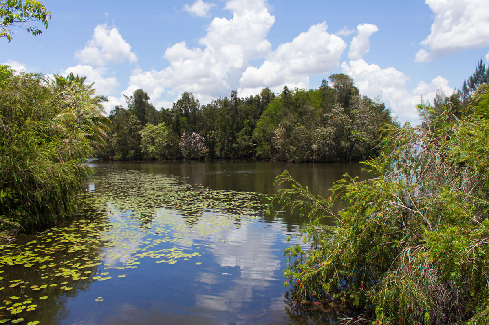

Zapata Swamp


The Beautiful and Amazing Zapata Swamp
When you visit the Zapata swamp, you are going to see many different types of beautiful and fascinating plants and animals. In the Zapata swamp, there are going to be a bunch of different types of animals. Some of the most seen animals in this place are the crabs, the crocodiles, the flamingo, and the bee hummingbird. The bee hummingbird is the smallest bird that has ever existed, maybe add a detail.
In the Zapata swamp you are going to see a bunch of different environmental sights. The Zapata swamp has these places for environmental preservation. In the Zapata swamp has the Las Salinas wildlife sanctuary. This is part of the arger Ciénaga de Zapata Biosphere Reserve.which in total is over 6,000 km² and the largest protected area in the caribbean.
But we can't forget about the beautiful swamp. the swamp is over One square million acres OR 4,000 Km squared. This swamp has a rating of 4.5 and is a beautiful place to go.